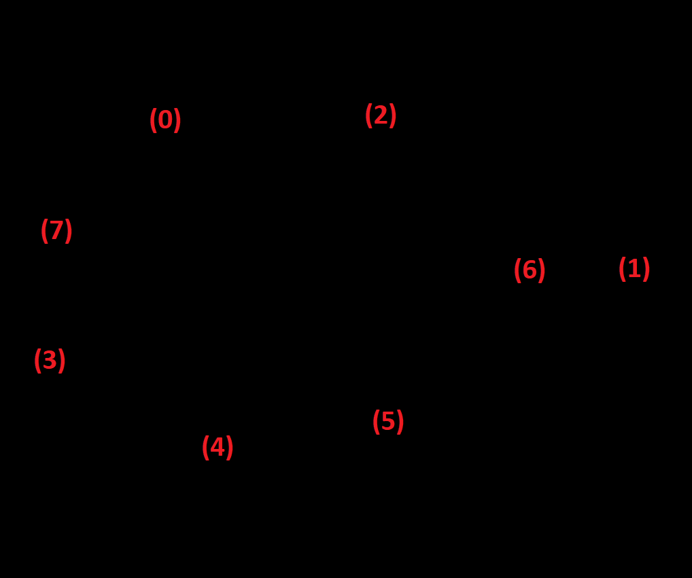
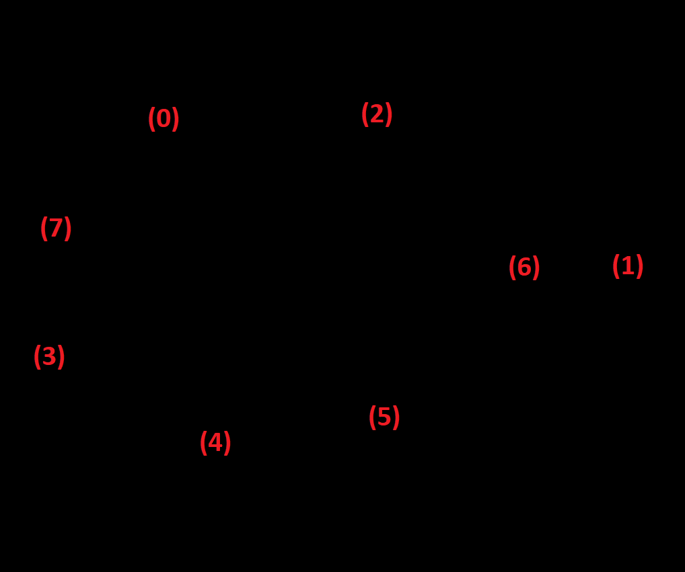
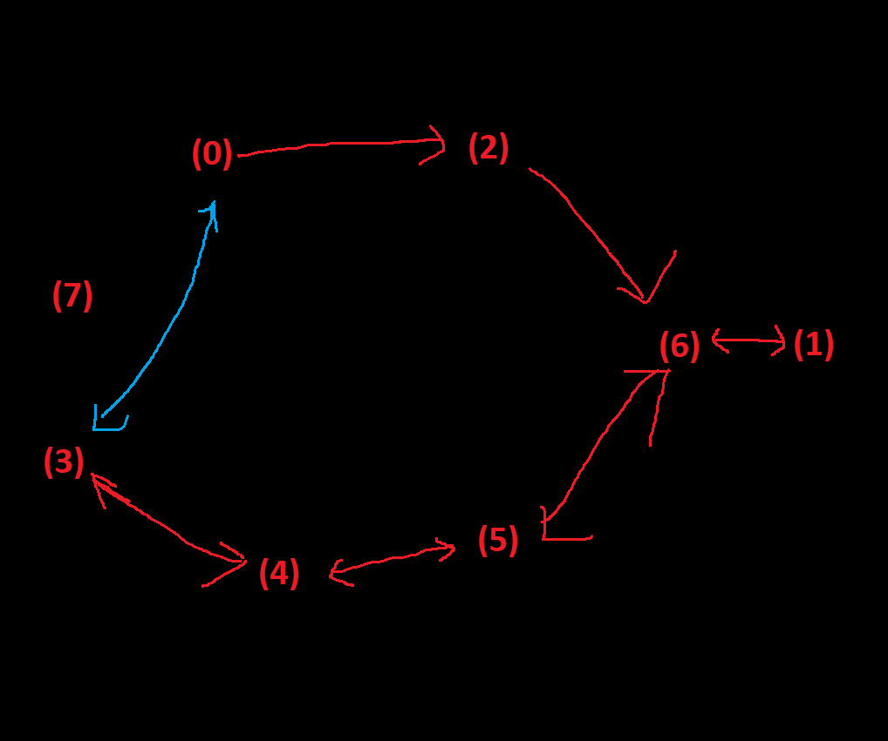
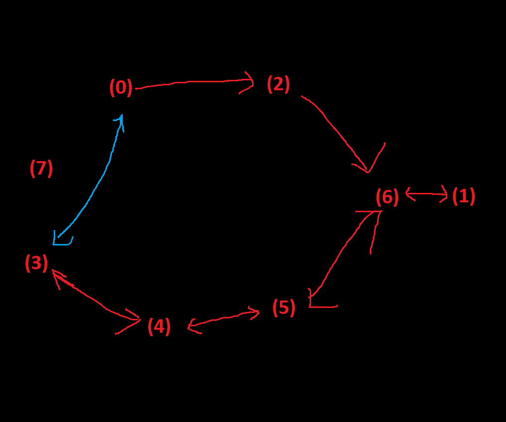
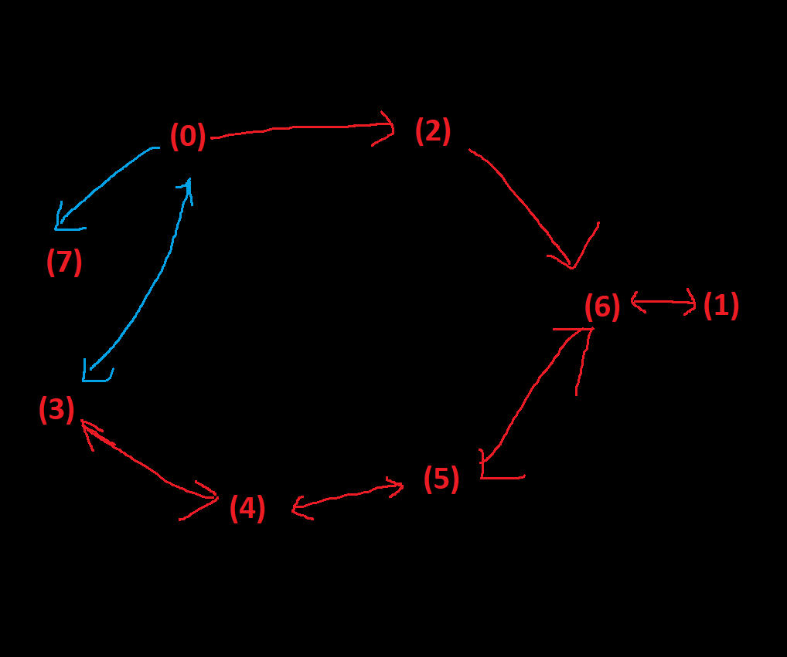
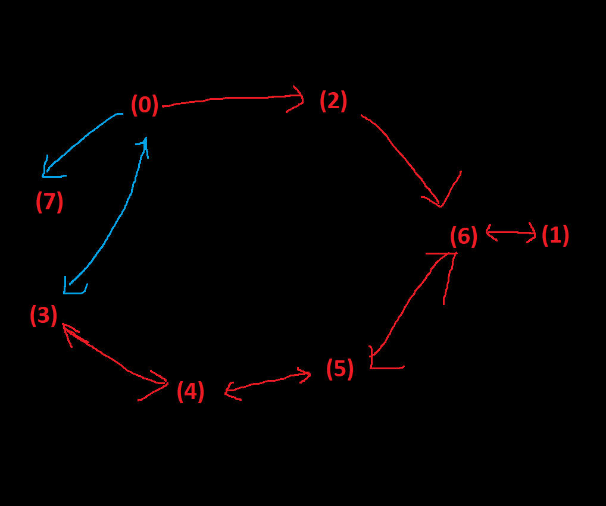

Values and Maximum in Puzzles
Game is about problem-solving. Problem-solving forms puzzles. I found a len of seeing puzzles is by the "values" of their "status", and how these "status" transform to each other to reach the "global maximum points" or "local maximum points". I found this len can be helpful when design games, because it hints on what the player experience of problem-solving could be. In this article, I will make some simple analyses with this len.
Terms
First of all, let me define the terms mentioned in last paragraph. Here I will take the game Sokuban as an easy example. A "status" is the integration of meaningful information at a certain time point, like a layout including the positions of the boxes, the destinations and the player. The "value" is a measurement of how close the status is close to the final goal. In Sokuban, it can be the number of boxes that are in destinations. A "global maximum point" is a reachable status whose value is the largest among all reachable status. (For a normal puzzle that has solutions, the global maximum points are always the status of solutions.) In Sokuban, if all the boxes are put into destinations, it is a global maximum point. A "local maximum point", on the other hand, is such a reachable status that no larger value could be reached unless transforming to some other status of smaller values first. For example, in the picture showed below, if the player pushes the red box down into the destination, it will be a local maximum point because the yellow one can never reach a destination without getting the red one out first.

IMG 1. Local Maximum Point in Sokuban
Two Methods for Single-Maximum Puzzles
Two methods are often used to solve single-maximum puzzles, like Jigsaw Puzzle and most escape rooms. First method is iterated greedy algorithm[1], to keep moving to higher-valued status until reaching the final goal. The other method is divide-and-conquer[2], to break the whole puzzle into smaller pieces and slove them one-by-one. In Jigsaw Puzzle, most players will separate pieces according to their colors/styles/shapes and work on each group seperately before put them together. In escape rooms, players always seek for clues about one smaller puzzle (like a password) in the game, and it always contributes to the final escaping as an earlier step. Both methods are efficient and can garantee the success in single-maximum puzzles.
For most puzzles that could be represented by finite-state machines[3], search algorithms[4] is a powerful solution. They But single-maximum puzzles are usually not so complex that players can prefer more intuitive and efficient approaches like greedy iteration and divide-and-conquer.
Multi-Maximum Puzzles: Approaching to Local Maximum Points
The situations for multi-maximum puzzles are much more challenging (and therefore interesting). Finding a maximum point is relatively easy, but this "maximum point" can be local now. Search algorithms are still useful, but it can be far too complex for human beings with too many status, and full information of the puzzle's logical abstraction is necessary to garantee the success. Human players still go to higher-valued status until a Local Maximum Point, with simple algorithms like greedy or divide-and-conquer, to gradually reveal the information and principles (high-level rules). Think of the game Rubik's Cube. Few human brains had the ability to perform search algorithms on it. Most players fix the faces one-by-one. Although the fixed faces definitely need to be broken later, the process teaches the player useful principles and decreases the complexity of the puzzle.
Once I watched an online streamer playing Celeste. A puzzle is that the player must collect all 3 blue coins to open the blue door to reach next map (in the picture below, start at (0), reach the positions (1)(2)(3) then go to (7) after the blue door move to the new position). He easily found the route (0)->(2)->(6)->(1)->(6)->(5)->(4)->(3) by simply moving to higher-valued reachable status. The revealed logical structure is as the below-right. The streamer got stuck there. Although he has access to the positions (3)(4)(5)(6)(1), he couldn't find any way to (7). Moving from (4) to (7) seemed impossible.
 

IMG 2. Route Found by Greedy Algorithm and the Information Revealed
I suggested him to try another route, (0)->(3)->(4)->(5)->(1)->(6)->(2). It was proved to be a Local Maximum Point in the end. Although it collects all 3 blue coins, going (6)->(2) necessarily kills the player. The streamer quickly found it out, but the wrong route revealed new useful information: moving between (0) and (3). With this information, the streamer quickly found the final solution: (0)->(2)->(6)->(1)->(6)->(5)->(4)->(3)->(0)->(7). In multi-maximum puzzles, going to Local Maximum Points are useful because of the information/principles revealed during the process, and it could directly solve the puzzle with a good luck.
 

IMG 3. A Wrong Route
 

IMG 4. Final Solution
Local Maximum Points and Player Experience
The natural motivation of players to go to most obvious higher-valued reachable status can help a lot on design. For example, the video What Makes a Good Puzzle[5] describes level 10 of the puzzle game Snakebird to illustrate the designed player experience "get stuck first and then find the solution outside of the box", which is usually the most exciting moment in puzzle-solving. Snakebird is about moving, eating fruits and growing in length, and going to the exit. The level 10 has 2 fruits to eat here.As showed below, the most obvious route of increasing the value is pineapple->pinch->exit for sure. But in this way, the snakebird will be too long to to back to the central tunnel. It is a so-called Local Maximum Point.
IMG 5. A Local Maximum Point in Snakebird level 10
Naturally, the player will try the sequence pinch->pineapple->exit then. But without eating the pineapple first, the snakebird isn't long enough to eat the pinch. It will fall to the bottom of the tunnel. The player will struggle a while here, trying to either eat the pinch first, or go back after eating the pineapple->pinch, which is totally in the designer's prediction.
IMG 6. Snakebird too short to eat the pinch
The final solution of this puzzle is to go UP instead of DOWN at the main tunnel. It is not intuitive, not natural, because the player has to resist the temptation of "getting closer to the fruit to increase the value of my status". But, once the player thinks of the solution, he necessarily feels himself very smart, and the game very interesting. That feeling of achievement won't exist without the stuck at the Local Maximum Points. That design won't be great without the fact that players will want to move closer to the goal.
IMG 7. Correct solution against intuition
There're also many other great player experience that utilized the value-motivated player psychology. And the design cam become more complex and exciting with dynamic puzzle logic (interactive object that will change the puzzle structure when triggered), randomly ingredients generating (like Candy Crush Sage) and other elements. The len of values and maximum, the abstracted logical model, the motivation of the players, can be a sharp weapon of designers to add complex level design with simple Zen.
Reference:[1] https://en.wikipedia.org/wiki/Greedy_algorithm
[2] https://en.wikipedia.org/wiki/Divide-and-conquer_algorithm
[3] https://en.wikipedia.org/wiki/Finite-state_machine
[4] https://en.wikipedia.org/wiki/Search_algorithm
[5] https://www.youtube.com/watch?v=zsjC6fa_YBg